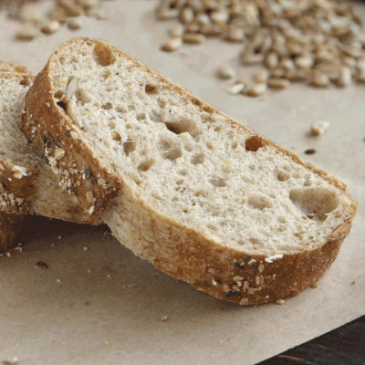

Ciabatta

Description
Give the old no-knead ciabatta a higher-fiber makeover. Since I don't have much whole wheat baking experience, I did what any good chef would do: I didn't do any research and just tried to figure it out. I was quite happy with the taste and texture.
Going 50/50 with the all-purpose flour provided just enough of that crusty, chewy 'normal' bread experience.
Ingredients
- 1 cup warm water
- 1/2 cup all-purpose flour
- 1/2 cup whole wheat flour
- 1/4 cup rye flour
- 1/4 teaspoon active dry yeast
- 1 cup all-purpose flour
- 1 cup whole wheat flour
- 1/2 cup water at room temperature
- 2 tablespoons shelled sunflower seeds
- 1 tablespoon polenta
- 1 tablespoon ground flax seeds
- 1 3/4 teaspoons salt
- 1 1/2 teaspoons honey
- 1 teaspoon all-purpose flour, or as needed
- 1/2 teaspoon cornmeal, or as needed
- water as needed
Steps
- Stir 1 cup warm water, 1/2 cup all-purpose flour, 1/2 cup whole wheat flour, 1/4 cup rye flour, and yeast together in a large bowl. Cover the bowl with plastic wrap and let sit until the sponge bubbles and doubles in volume, 5 to 6 hours.
- Stir 1 cup all-purpose flour, 1 cup whole wheat flour, 1/2 water, sunflower seeds, polenta, flax seeds, salt, and honey into sponge with a wooden spoon until a very sticky dough ball forms, about 3 minutes. Scrape down the the sides of the bowl, cover bowl with plastic wrap, and let dough rise until doubled in volume, 10 hours to overnight.
- Line a baking sheet with parchment paper. Dust parchment paper with 1/2 teaspoon all-purpose flour and cornmeal.
- Scrape dough out of bowl onto a lightly floured work surface, press down to remove air, and form into a smooth oval loaf. Place dough on the prepared baking sheet. Dust top of loaf lightly with flour, cover with plastic wrap, and let rise until doubled in size, about 1 1/2 hours.
- Preheat oven to 450 degrees F (230 degrees C). Place a baking dish filled with water on the bottom rack of the oven.
- Remove plastic wrap from risen dough and mist the top of the dough with water.
- Bake loaf in the preheated oven, misting the top of the loaf with water every 8 to 10 minutes, until loaf is golden and sounds hollow when tapped, 30 to 35 minutes total. Transfer bread to a cooling rack and let cool completely before slicing.
Return Home